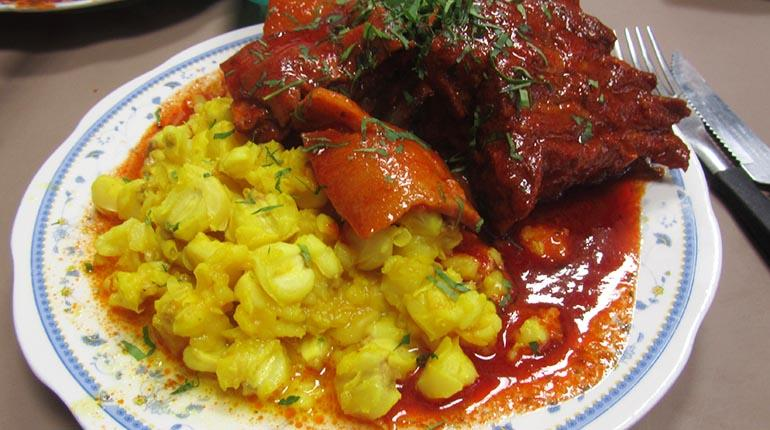

Based mostly on a meat diet, Sucre offers a nice regional menu with different options to taste and enjoy. One of the most famous dishes is Chorizo Chuquisaqueño (Chuquisaqueño Sausage), it is served as an entry meal. Also, these sausages are mostly made of meat from animals bought straigh from farms (criollo meat).
For the main dishes or "segundos" (second in spanish) we have the Mondongo, loved by everyone, which consists in pork meat and skin. And Fritanga, similar to Mondongo but with the difference of being spicy and the meat is fried. ENJOY
Sucre's music has a recognizable vivid rythm, consisting of the use of guitars, charangos, zampoñas and tambourines. And also some more unique instruments like the senqatanqana that works as a flaute, it is used a lot in the rural town of Tarabuco. During festive holydays you can spot these big flautes in dancing groups marching and dancing in the streets with colorful costumes.
Many genders are native from this region like the Pujllay, Tarkeada, Chuntunqui and the famous Cueca.